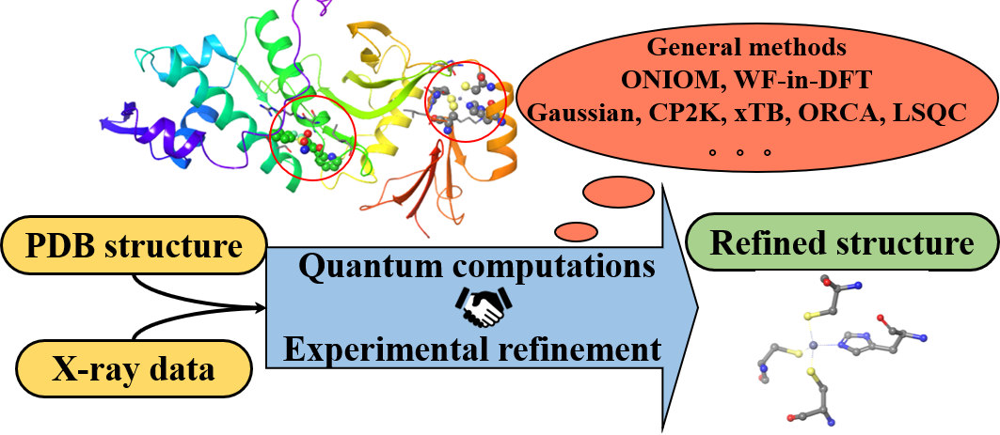
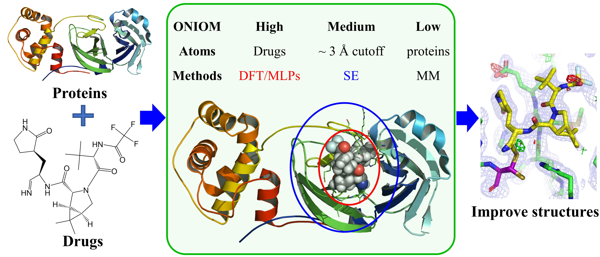
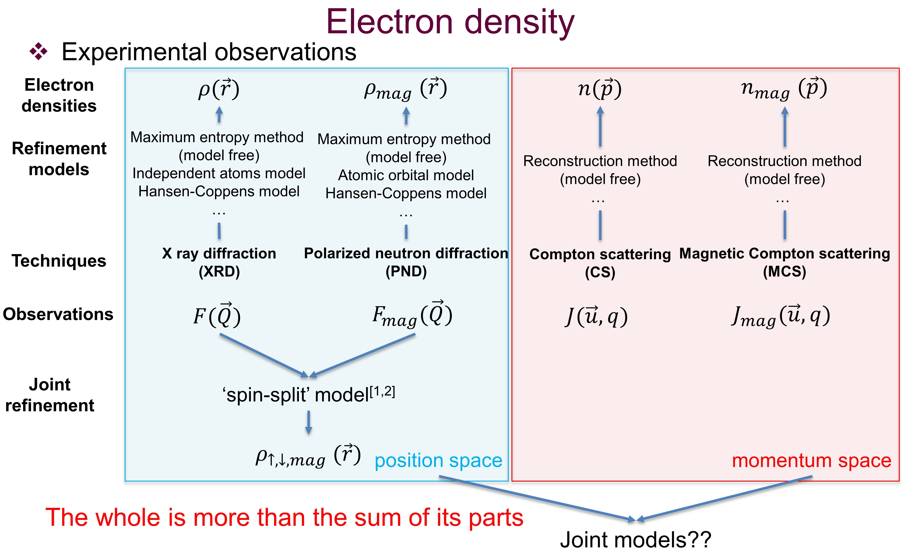

Physics-based modelling
Multiscale simulation of nanomedicine
- DFT
- all-atom MD
- coarse-grained models
- DPD
Associate Professor
Institute of Nanotechnology and Intelligence (inAI)
Jinan University
I am an Associate Professor at the Jinan University Institute of Nanotechnology and Intelligence (inAI), in Guangzhou, China. Before joining Jinan University I spent six years at the Southern University of Science and Technology (SUSTech) as a post-doctoral fellow and then Senior Research Fellow in the Department of Chemistry, working with Prof. Lung Wa Chung. I received my PhD in Physics from CentraleSupélec, Université Paris-Saclay in 2018, supervised by Prof. Jean-Michel Gillet.
My group builds computational methods for nanomedicine. We combine multiscale physics-based simulation — electronic structure (DFT), all-atom molecular dynamics, and coarse-grained / dissipative particle dynamics (DPD) — with machine learning and Bayesian optimization. The aim is to make the design of nanocarriers and drug-delivery systems something we can predict and optimize, instead of something we find by trial and error.
Physics-based modelling
ML + first principles
Closed-loop experimental design
Theoretical computation is a model that describes nature, and each experiment yields a projection of nature from one particular point of view. I believe a general model that combines theoretical computation with multiple experimental observations can bring us closer to nature — much as a 3D object can be reconstructed from a set of 2D images.


